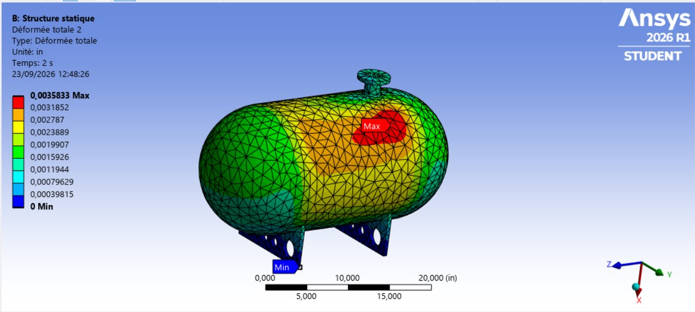

Project Description
This project focuses on the finite element analysis of a pressurized tank subjected to an internal pressure of 1 MPa and the weight of a 200 kg pump-motor assembly mounted on the top nozzle.
The objective is to evaluate the structural response of the tank, particularly the deformation and von Mises stress, and to investigate the behavior of the model around the region where higher stress levels are expected.
The project is carried out in four main steps, from geometry design in SolidWorks to the analysis of the simulation results and adaptive mesh refinement.
Part 1 — Geometry Design in SolidWorks
The tank geometry was created in SolidWorks. The model includes the main cylindrical vessel, its supports, end caps and the top nozzle used for the connection of the pump-motor assembly.
The geometry was prepared with the finite element analysis in mind, while retaining the structural features that may influence the stress distribution.
Part 2 — Geometry Preparation in ANSYS
The SolidWorks geometry was imported into ANSYS and divided into two regions.
This separation was introduced to allow more controlled treatment of the area where higher stress levels were expected. In particular, dividing the geometry makes it possible to apply a more localized mesh treatment if required during the analysis.
This approach also avoids unnecessarily refining the entire tank when a local refinement is sufficient.
Part 3 — Material, Boundary Conditions and Loading
The model was set up in ANSYS Mechanical for a structural analysis using steel as the material.
Material Properties
The tank was constrained using the appropriate boundary conditions at its supports. The loading was introduced using load steps in order to progressively apply the different loads acting on the structure.
Gravity was applied to account for the weight of the structure. An internal pressure of 1 MPa was applied to the internal surfaces of the tank. A cross-section view was used to facilitate the selection of the internal surfaces.
The pump-motor assembly was represented by a 200 kg point mass located at the top nozzle. This allows the effect of the suspended equipment to be included in the structural analysis without explicitly modelling the complete assembly.
Part 4 — Results and Adaptive Mesh Refinement
After solving the model, the main structural results were examined through the total deformation and von Mises stress distributions.
Initial Results
The maximum von Mises stress obtained from the initial analysis is 61.1 MPa, which is below the tensile yield strength of the steel used in the model (250 MPa).
An adaptive mesh refinement study is then performed to investigate the influence of mesh refinement on the numerical results, particularly in the region where the highest stresses are observed.
The refined results will be compared with the initial solution to assess the stability of the calculated stress and deformation.
Video 4 — Results and Adaptive Mesh Refinement
VIDEO PLACEHOLDER
Conclusion
The finite element analysis provides an initial assessment of the structural behavior of the pressurized tank under internal pressure, gravity and the additional load associated with the 200 kg pump-motor assembly.
The initial simulation gives a maximum von Mises stress of 61.1 MPa and a maximum total deformation of 0.05 mm. The maximum stress remains below the 250 MPa tensile yield strength of the material.
The adaptive mesh refinement study is used to further evaluate the reliability and stability of these numerical results.